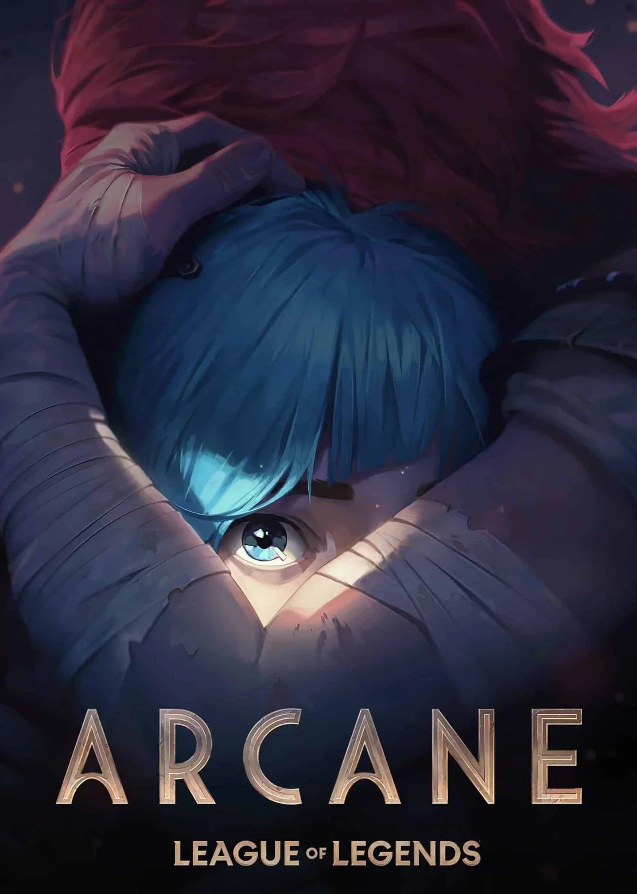

Arcane season 1 takes place in the universe of the video game League of Legends and explores the story of two sisters, Vi and Jinx, in the city of Piltover and its undercity, Zaun.
The plot follows the rising social tensions between the wealthy inhabitants of Piltover and the oppressed people of Zaun. After a tragic event, Vi and Jinx, separated by circumstances,
take different paths: Vi becomes a figure of order and resistance, while Jinx descends into madness and becomes a rampaging terrorist. Meanwhile, characters like Jayce, Caitlyn, and Viktor
play a key role in the struggle for power and technological advancements. The season explores themes of family, power, rebellion, and transformation, while shedding light on the origins of
the famous characters from the game.

SEASON 2
RELEASE : November 9, 2024
Season 2 of Arcane continues to delve into the growing conflicts between Piltover and Zaun. Following the tragedy of the first season, the plot focuses on the consequences of past events,
particularly the division between the sisters Vi and Jinx, and the impact of new technologies.
Vi, still determined to save her sister, engages in clashes with the forces of Piltover, while Jinx, increasingly unstable, continues her descent into violence and destruction. Meanwhile,
political tensions in Piltover intensify, with characters like Jayce and Caitlyn playing a crucial role in strategic maneuvers.
Season 2 further explores themes of power, redemption, and the inner struggles of the characters, while revealing the origins of other iconic characters. The stakes rise dramatically, and the
balance between the two cities is more fragile than ever.